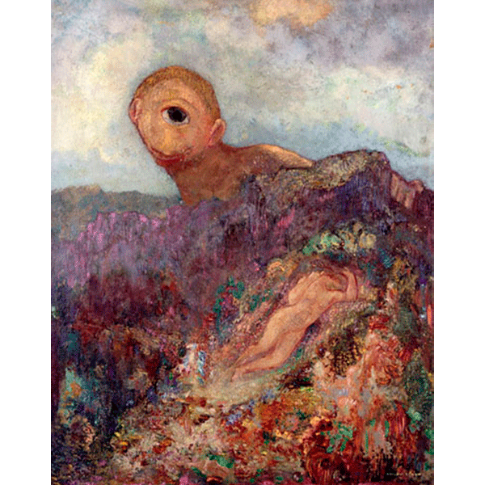
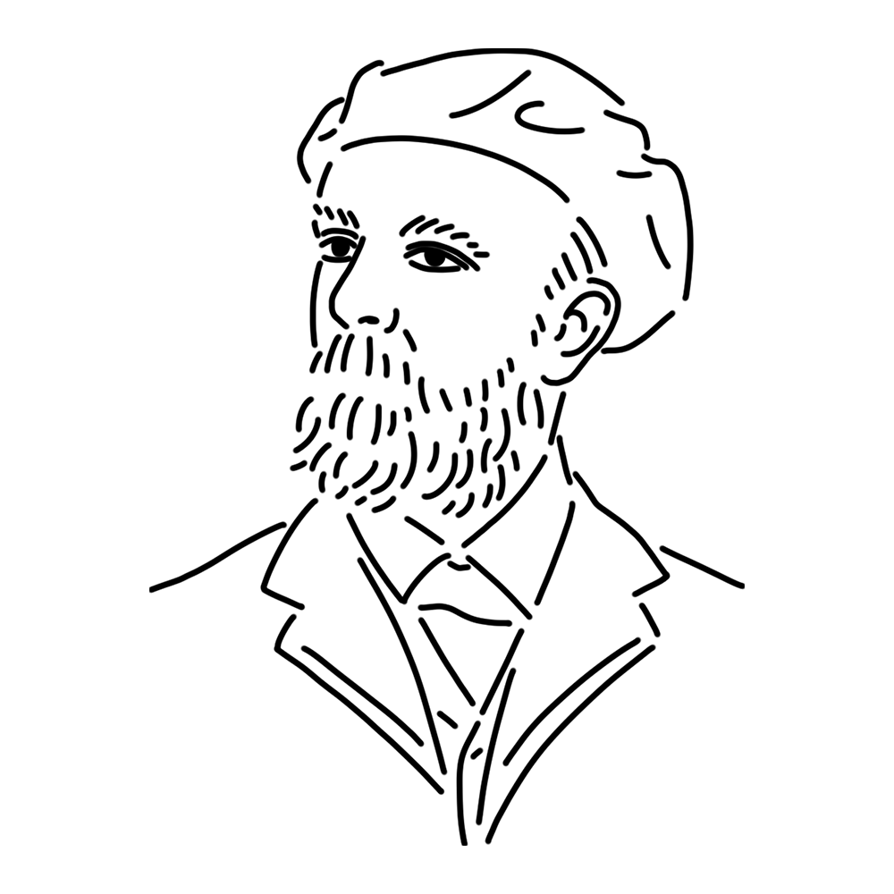

A French muse who represents Symbolism. Her timid personality led to her works being dark and gloomy, but deep within her lies a dreamlike palette that rivals any painting. The insect legs growing from Redon's skirt move regardless of Redon's will.
Kingdom of France
"The Cyclops"
"The Eye Like a Weird Balloon"
"Closed Eyes" etc.

This work depicts Galatea, a water nymph from Greek mythology, and Polyphemus, a one-eyed giant who fell in love with her. Polyphemus was originally a very violent boy, but the depiction in this painting gives him a shy impression. It is hard not to see Redon's own figure in this painting, who was put up for adoption immediately after birth and spent a lonely childhood.
Year
Around 1914
Medium
Oil on canvas
Dimension
64 cm x 51 cm
Collection
Kröller-Müller Museum (Netherlands)

A painter who wandered the border between dream and reality, representing 19th-century French Symbolism. His early prints depicting enigmatic creatures emerging from pitch-black backgrounds can be summed up in one word: eerie. Once seen, they are unforgettable. Yet later in life, his work underwent a dramatic shift: his canvases became flooded with vivid colors, and his subjects evolved into fantastical human figures. His style, which seemed to reflect inner states, made him a central figure in Symbolism, exerting a profound influence on later Surrealists and other fantasy artists.
Bertrand-Jean Redon
April 22, 1840
July 6, 1916(aged 76)